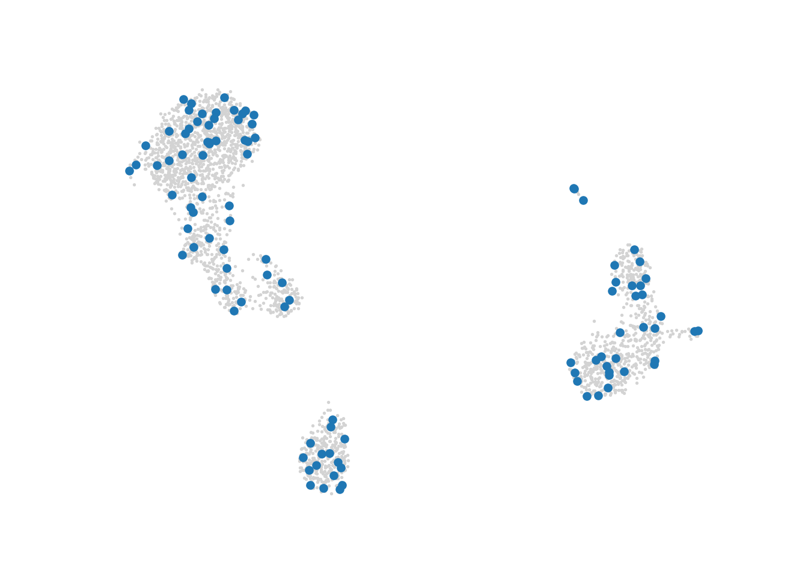
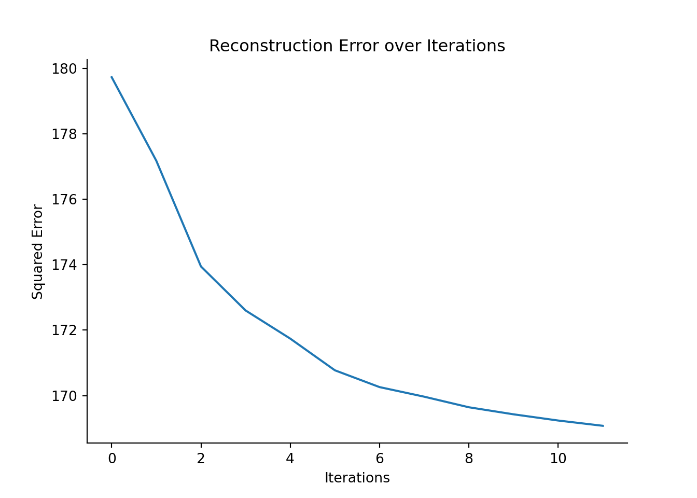
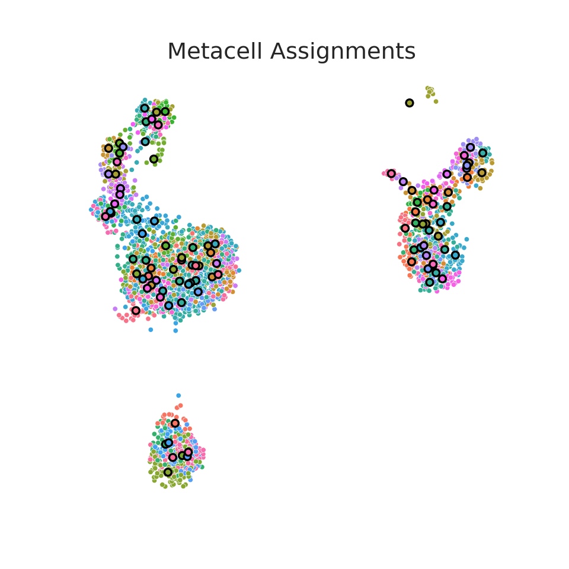

3.3 SEACells (Python)
In this section, we construct metacells using SEACells.
3.3.1 Method
The SEAcells method builds a single-cell kNN graph from the Euclidean distance in the principal component space (SVD for scATAC-seq) space. Distances in the graph are transformed to affinity by applying an adaptive Gaussian kernel. The affinity matrix is then decomposed into archetypes (linear combination of cells) and membership matrices (cells as a linear combination of archetypes). Single cells are assigned to a given metacell based on the maximum membership value of the corresponding archetype.
The code provided in this section is adapted from the author’s jupyter notebook. For more information on the method, please refer to our review14 and the original paper.15
Importing python packages
To run the SEACells, the following python packages need to be imported:
import os
import pandas as pd
import scanpy as sc
import SEACells
import randomIf you don’t have these packages installed, please refer to the section 1.1.
3.3.2 Data loading
Similarly to SuperCell and MC2, we will run SEACells on the single-cell dataset composed of around 3000 peripheral blood mononuclear cells (PBMCs). Please follow the section 1.2 to retrieve these data from the scanpy package and save the data in the following file: “data/3k_pbmc/singlecell_anndata_filtered.h5ad”.
MC_tool = "SEACells"
proj_name = "3k_pbmc"
ad = sc.read(os.path.join("data", proj_name, "singlecell_anndata_filtered.h5ad"))3.3.3 Filtering steps
In this tutorial, the data have been pre-filterd and SEACells does not perform additionnal filtering.
3.3.4 Building metacells
Metacells construction using SEACells requires 2 main inputs: i) an anndata object (build_kernel_on parameter), and
ii) a key indicating which matrix in the obsm attribute of the anndata object should be considered to compute the kernel needed for archetypal analysis (build_kernel_on parameter).
Important optional inputs are: the number of metacells to identify (n_SEACells parameter), which is used as input of the archetypal analysis,
ii) the number of neighbors to consider for the knn graph (n_neighbors parameter).
Data pre-processing
The following code chunk saves the raw counts of the filtered data in the raw attribute of the anndata object. The raw counts will be used later for metacells aggregation.
raw_ad = sc.AnnData(ad.X)
raw_ad.obs_names, raw_ad.var_names = ad.obs_names, ad.var_names
ad.raw = raw_adTo build the kernel for archetypal analysis, SEACells requires a lower-dimensionnal embedding of the data (for example using PCA for scRNA-Seq data or SVD for scATAC-Seq data).
In the next code chunk, we follow standard pre-processing steps prior to PCA computation, i.e., data normalization, log transformation, identification of highly variable genes.
PCA components are saved in the obsm attribute of the anndata object.
To pre-process the single-cell data, we are using standard pre-processing for single-cell RNA-seq data using Scanpy. For more information, see the Scanpy tutorial.
# Normalize cells, log transform and compute highly variable genes
sc.pp.normalize_per_cell(ad, 10000)
sc.pp.log1p(ad)
sc.pp.highly_variable_genes(ad, n_top_genes=2000)# Compute principal components -
n_comp = 30
sc.tl.pca(ad, n_comps=n_comp, use_highly_variable=True)
# Compute UMAP for visualization
# Here we use 30 components to be consistent with our main tutorial, but fill free to explore other number of principal components to use
sc.pp.neighbors(ad, n_neighbors=15, n_pcs=30)
sc.tl.umap(ad)Setting up SEACells parameters
In this tutorial, we will use in the SEACells model the 30 first principal components resulting from the PCA to build the knn graph which will be used to compute the kernel.
The number of neighbors to considered for the knn graph can be fixed using the n_neighbors parameter (here 15).
As mentioned previously, users should provide as input the number of metacells required (n_SEACells parameter). This number can be defined as the ratio between the number of single cells and the desired graining level (gamma parameter in the following code chunk).
In this example, we choose a graining level of 25.
build_kernel_on = 'X_pca' # key in ad.obsm to use for computing metacells
n_waypoint_eigs = 10 # Number of eigenvalues to consider when initializing metacells
n_neighbors = 15 # Number of neighbors used for graph construction
gamma = 25 # the requested graining level
n_SEACells = int(ad.shape[0]/gamma) # the requested number of metacells Initializing the SEACells model
The SEACells model is initialized with the previously defined parameters using the SEACells.core.SEACells function.
model = SEACells.core.SEACells(ad,
build_kernel_on = build_kernel_on,
n_SEACells = n_SEACells,
n_waypoint_eigs = n_waypoint_eigs,
n_neighbors = n_neighbors,
convergence_epsilon = 1e-5,
verbose = True)
#> Welcome to SEACells!Kernel computation is performed using the mconstruct_kernel_matrix function.
model.construct_kernel_matrix()
M = model.kernel_matrixMetacells are initialized using the initialize_archetypes function.
The SEACells archetypes initialization is based on cells sampling and thus is stochastic. User can fix a seed for reproducible results.
To check that the archetypes are evenly spread, users can visualize them using the plot.plot_initialization function.
# set seed for reproducibility
random.seed(123)
# Initialize archetypes
model.initialize_archetypes()
#> Building kernel on X_pca
#> Computing diffusion components from X_pca for waypoint initialization ...
#> Done.
#> Sampling waypoints ...
#> Done.
#> Selecting 88 cells from waypoint initialization.
#> Initializing residual matrix using greedy column selection
#> Initializing f and g...
#> Selecting 17 cells from greedy initialization.
#>
#>
0%| | 0/27 [00:00<?, ?it/s]
100%|##########| 27/27 [00:00<00:00, 320.79it/s]
# Visualize the initialization
SEACells.plot.plot_initialization(ad, model, plot_basis='X_umap') 
Fitting the SEACells model to identify metacells
The identification of the archetypes is an iterative process. In this example, we fixed the minimum and maximum number of iteration to 10 and 50 respectively.
We then check the model convergence using the plot_convergence function.
model.fit(min_iter = 10, max_iter = 50)
#> Randomly initialized A matrix.
#> Setting convergence threshold at 0.00088
#> Starting iteration 1.
#> Completed iteration 1.
#> Starting iteration 10.
#> Completed iteration 10.
#> Starting iteration 20.
#> Completed iteration 20.
#> Starting iteration 30.
#> Completed iteration 30.
#> Starting iteration 40.
#> Completed iteration 40.
#> Converged after 46 iterations.
model.plot_convergence()
Once the final archetypes have been identified, we can assign each single-cell to one metacell (hard assignments).
These assignments (membership) can be retrieved using the get_hard_assignments function or extracted from the anndata object using ad.obs["SEACell"].
In this tutorial, we will only consider hard assignments. However, the SEACells package also provides the option to retrieve soft assignments (multiple weighted assignments for each cell) using the get_soft_assignments function.
For more details on the soft assignments, please refer to the SEACell paper and the original author’s jupyter notebook.
membership = model.get_hard_assignments()
membership.head
#> <bound method NDFrame.head of SEACell
#> index
#> AAACATACAACCAC-1 SEACell-35
#> AAACATTGAGCTAC-1 SEACell-69
#> AAACATTGATCAGC-1 SEACell-0
#> AAACCGTGCTTCCG-1 SEACell-24
#> AAACCGTGTATGCG-1 SEACell-57
#> ... ...
#> TTTCGAACTCTCAT-1 SEACell-1
#> TTTCTACTGAGGCA-1 SEACell-101
#> TTTCTACTTCCTCG-1 SEACell-30
#> TTTGCATGAGAGGC-1 SEACell-40
#> TTTGCATGCCTCAC-1 SEACell-42
#>
#> [2638 rows x 1 columns]>
ad.obs["SEACell"].head
#> <bound method NDFrame.head of index
#> AAACATACAACCAC-1 SEACell-35
#> AAACATTGAGCTAC-1 SEACell-69
#> AAACATTGATCAGC-1 SEACell-0
#> AAACCGTGCTTCCG-1 SEACell-24
#> AAACCGTGTATGCG-1 SEACell-57
#> ...
#> TTTCGAACTCTCAT-1 SEACell-1
#> TTTCTACTGAGGCA-1 SEACell-101
#> TTTCTACTTCCTCG-1 SEACell-30
#> TTTGCATGAGAGGC-1 SEACell-40
#> TTTGCATGCCTCAC-1 SEACell-42
#> Name: SEACell, Length: 2638, dtype: object>Retrieve aggregated metacell data
The core.summarize_by_SEACell function can be used to generate a metacell count matrix (aggregation of counts across all cells belonging to each metacell).
mc_ad = SEACells.core.summarize_by_SEACell(ad, SEACells_label='SEACell', summarize_layer='raw', celltype_label=annotation_label)
#>
0%| | 0/105 [00:00<?, ?it/s]
56%|#####6 | 59/105 [00:00<00:00, 587.31it/s]
100%|##########| 105/105 [00:00<00:00, 606.52it/s]3.3.5 Visualize metacells
To visualize the metacells, we can project the metacells on the single-cell UMAP representation using the plot.plot_2D included in the SEACells package.
SEACells.plot.plot_2D(ad, key='X_umap', colour_metacells=True)
Save output
For future downstream analyses in python (section ??), we save the metacell counts in an Anndata object:
print("Saving metacell object for the "+ proj_name+ " dataset using "+ MC_tool)
#> Saving metacell object for the 3k_pbmc dataset using SEACells
# Save metacell sizes
label_df = ad.obs[['SEACell']].reset_index()
mc_ad.obs = mc_ad.obs.join(pd.DataFrame(label_df.groupby('SEACell').count().iloc[:, 0]).rename(columns={'index':'size'}))
# save pca used to compute metacells
mc_ad.uns['var_features']=ad.var_names[ad.var.highly_variable].tolist()
mc_ad.uns['sc.pca']=ad.obsm['X_pca']
mc_ad.uns['sc.umap']=ad.obsm['X_umap']
mc_ad.write_h5ad(os.path.join('./data', proj_name, f'metacell_{MC_tool}.h5ad'))For future downstream analyses in R (section 5.1), we save the metacell counts in a Seurat object:
library(Seurat)
library(anndata)
library(reticulate)
adata_mc <- read_h5ad(paste0("data/", py$proj_name, "/metacell_SEACells.h5ad"))
# Save counts and metadata in a Seurat object
countMatrix <- Matrix::t(adata_mc$X)
colnames(countMatrix) <- adata_mc$obs_names
rownames(countMatrix) <- adata_mc$var_names
MC.seurat <- CreateSeuratObject(counts = as(countMatrix, 'CsparseMatrix'), meta.data = as.data.frame(adata_mc$obs))
#> Warning: Feature names cannot have underscores ('_'), replacing with dashes
#> ('-')
# MC.seurat@misc[["sc.pca"]] <- adata_mc$uns$sc.pca
# MC.seurat@misc[["sc.umap"]] <- adata_mc$uns$sc.umap
MC.seurat@misc[["var_features"]] <- adata_mc$uns$var_features
pca.res <- adata_mc$uns$sc.pca
rownames(pca.res) <- rownames(py$ad$obs)
MC.seurat@misc$sc.pca <- CreateDimReducObject(
embeddings = pca.res,
key = "PC_",
assay = "RNA"
)
#> Warning: No columnames present in cell embeddings, setting to 'PC_1:30'
# Save membership in misc
MC.seurat@misc$cell_membership <- data.frame(row.names = rownames(py$membership), membership = py$membership$SEACell)
saveRDS(MC.seurat, file = paste0('./data/', py$proj_name, '/metacell_SEACells.rds'))